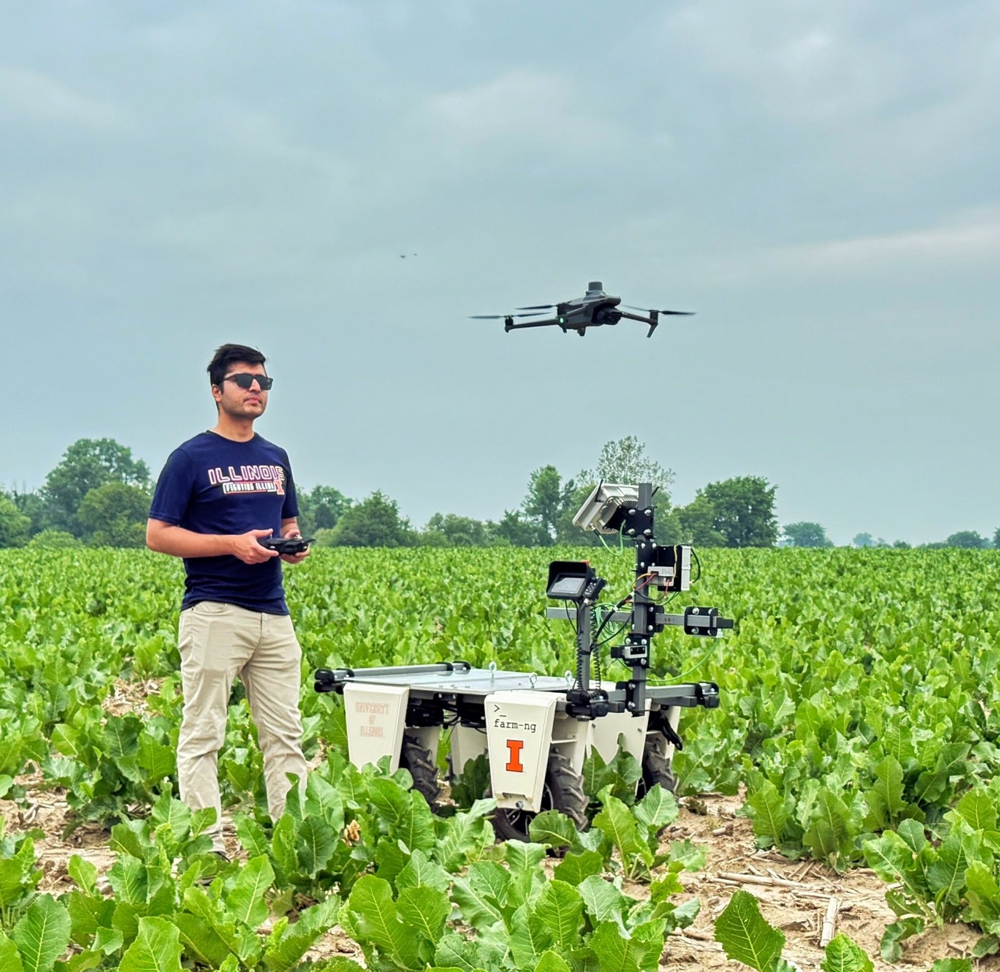
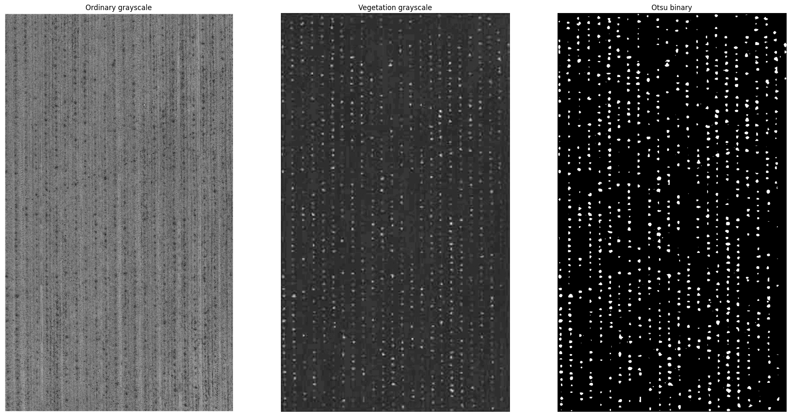
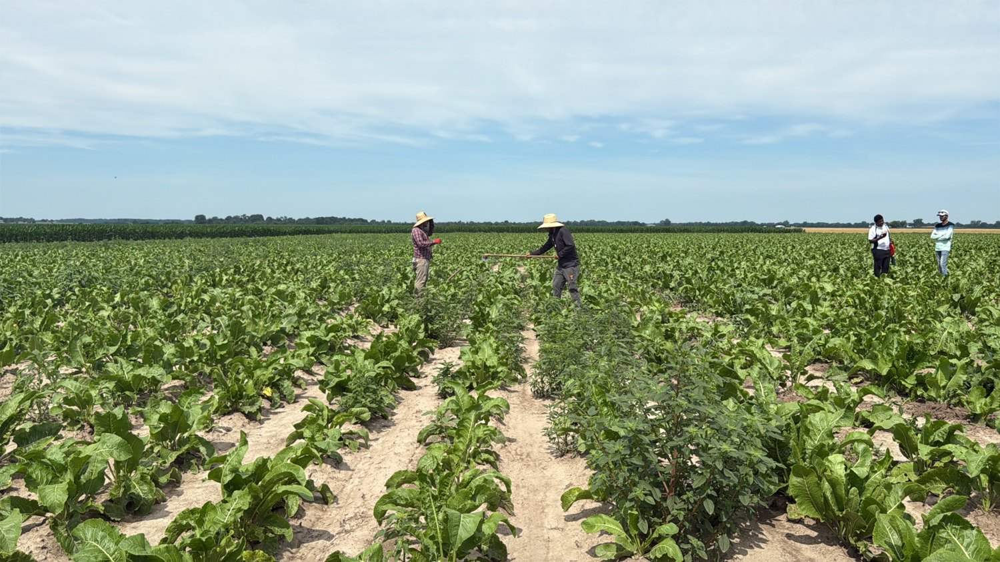

Exploring agricultural robotics, computer vision, and the adoption of digital technologies—from field systems to published research.
PhD Research | Perception to Field Action
At the University of Illinois Urbana-Champaign, I work under Dr. Sunoj Shajahan ↗ in the Digital Precision Agriculture Lab ↗. My PhD focuses on sensing, spatial analysis, and robotic intervention for specialty crops, using horseradish as a field research system.
AGRICULTURAL ROBOTICS
Site-Specific Mechanical Weeding
I investigate the integration of vision-based perception, navigation, and mechanical actuation on the Farm-ng Amiga platform. The objective is to locate crops and weeds, relate those observations to field position, and support targeted mechanical treatment in horseradish production.
This work combines camera and sensor integration, modular end-effector development, prototyping, and performance evaluation under agricultural field conditions.

Drone imagery and the Farm-ng Amiga robot connect aerial sensing with site-specific mechanical weeding.
GEOREFERENCED STAND COUNT
Mapping Horseradish Plant Populations
My current research estimates horseradish stand count and characterizes georeferenced plant spatial distribution from UAV imagery. In QGIS and Python, I examine vegetation enhancement, adaptive segmentation, connected plant regions, and plant centroids to translate imagery into spatially explicit crop observations.
Traditional computer vision provides an interpretable workflow: vegetation grayscale enhancement followed by Otsu thresholding separates candidate vegetation from background. Georeferenced detections support analysis of row structure, plant-to-plant spacing, and stand variability, with manual observations used for validation.

Traditional computer vision: ordinary grayscale → vegetation grayscale → Otsu binary segmentation. Candidate plant regions form the basis for stand-count and spatial analysis.
COMPUTER VISION & GEOAI
From Images to Spatial Intelligence
I also work with deep-learning computer vision for crop and weed detection and image segmentation. My research connects visual predictions with georeferenced imagery and GIS analysis, examining how GeoAI can support reproducible mapping and spatial interpretation in specialty-crop systems.
During my research fellowship at the University of Bonn, I developed image-segmentation models for later integration into robotic weeding. Together, classical image processing and learned perception contribute complementary approaches to field-scale agricultural sensing.

Horseradish field observations provide agricultural context for image-based perception and spatial analysis.
Master’s Research | Digital Technology Readiness
UNIVERSITY OF GEORGIA · MS AGRICULTURAL ENGINEERING
Digital Agriculture Technology Readiness Levels (DATRL)
My master’s research developed a framework for assessing the maturity of digital agricultural technologies and supporting their adoption. This work examined how readiness assessment can connect technology development with practical agricultural needs.
Related work included a 3D-printing training manual for farmers and STEM students, bringing digital fabrication and hands-on learning into agricultural education.
Arena · STELLA · Data acquisition · Experimental design · Technical writing · Research mentoring
Publications & Work in Progress
Selected writing on digital agriculture, agricultural systems, and technology. Papers under review are labeled separately.
2026
Evaluation of YOLO-based weed detection models on commercial horseradish fields in Southern Illinois
Pagadala, A., Poudel, S., Rathi, J. U., Sunoj, S., & Reid, J. F. · Frontiers in Agronomy, 8, 1777087.
Published2025
Digitalization of agriculture: Enhancing workforce dynamics through technology
Poudel, S., Rains, G., Porter, W., & Mani, S. · Book chapter on human–technology partnerships and workforce development.
Published2024
Food safety in developing countries: the context of Nepal
Subedi, D., Paudel, M., Poudel, S., & Koirala, N. · Food Frontiers. Read paper →
Published2024
Sustainable poultry farming practices: A critical review of current strategies and future prospects
Bist, R. B., et al., including Poudel, S. · Poultry Science, 104295.
Published2019
The energy input-output analysis of maize production in Sundarharaincha Municipality, Nepal
Sandesh P., et al. · IOP Conference Series: Earth and Environmental Science, 301, 012027.
Published2026
Expanding precision agriculture capabilities for small- and medium-sized farmers: Stand count of horseradish as a test crop
Poudel, S., Shajahan, S., & Reid, J. · Under review.
Under review—
Current prospects and advancements in sensor-based precision mechanical weeding for sustainable agriculture
Sandesh P. & Sunoj Shajahan · Under review.
Under reviewBook
Agricultural Extension Education
Samiksha Publication, Nepal · ISBN 978-9937-710-28-2.
Book
Conference Presentations
2025
Automation of weed management in specialty crops through AI-driven robotics [Presentation]
Poudel, S., & Shajahan, S. (2025). NTU-UIUC Summer Workshop 2025, University of Illinois Urbana-Champaign.
Presentation2025
Site-specific mechanical weed management for specialty crops through AI- driven robotics
Poudel, S., & Shajahan, S. (2025). Proceedings of the Purdue Symposium of Digital Agriculture. West Lafayette, IN: Purdue University, US.
Presentation2024
Development of the Digital Agricultural Technology Readiness Level (DATRL): A Comprehensive Framework for Assessing Digital Agricultural Technologies – American Society of Agricultural and Biological Engineers, Annual International Meeting, Anaheim, CA, US.
Poudel, S., Rains, G.C., Porter, W., Mani, S. (2024).
Presentation2024
Advancing Digital Agriculture: Bridging the Knowledge Gap through Hands-on Training in Digital Technologies for Farmers – American Society of Agricultural and Biological Engineers, Annual International Meeting, Anaheim, CA, US.
Development of Digital Agriculture Technology Readiness Levels (DATRL) for the Future of Digital Agriculture, American Society of Agricultural and Biological Engineers (ASABE), Annual General Meeting 2023, Omaha, Nebraska, US.
Poudel, S., Mani, S. (2023).
Presentation2023
Current trend of Digital Agriculture Technology in the United States, American Society of Agricultural and Biological Engineers, Annual General Meeting 2023, Omaha, Nebraska, US.
Poudel, S., Mani, S. (2023).
Presentation2018
Study on Energy use, greenhouse gas emission, and global warming potential for maize production in Morang District, Nepal, 4th International Conference on Renewable Energy Technology for Rural and Urban Development (RETRUD-18), Kathmandu, Nepal.